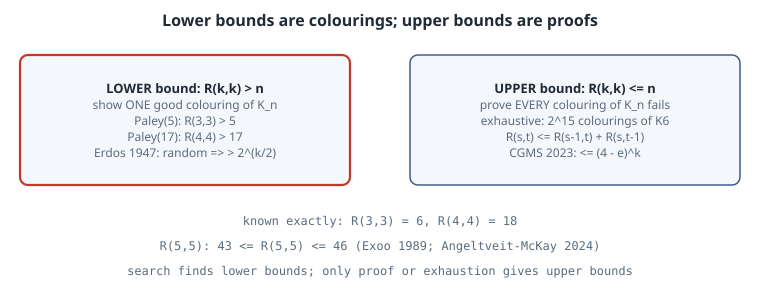

Ramsey Numbers: Order You Cannot Avoid
Ramsey Numbers: Order You Cannot Avoid
Thesis
Colour every edge of a complete graph red or blue. If the graph is large enough, you cannot avoid a monochromatic clique of size \(k\). The smallest such size is the Ramsey number \(R(k,k)\). Among any six people, three are mutual friends or three are mutual strangers, which says \(R(3,3) = 6\). The numbers are easy to define and very hard to compute:
- \(R(4,4) = 18\) has been known since 1955.
- \(R(5,5)\) is still only known to lie between 43 and 46.
- The best general lower bound is still essentially Erdős’s 1947 random-colouring argument.
The asymmetry is the lesson. A lower bound needs one good colouring, which you can find by cleverness, symmetry, randomness or search. An upper bound needs a proof that every colouring fails. This chapter does both kinds by computer, for the cases that fit.
Mental model

5 and Paley(17) for R(4,4) > 17, or from Erdos's probabilistic argument that such a colouring exists. Right side: upper bounds need a proof that every colouring of K_n contains one, for example exhaustive search for R(3,3) <= 6, or the recursion R(s,t) <= R(s-1,t) + R(s,t-1). For R(5,5) the gap is 43 to 46.">Definition. \(R(s,t)\) is the least \(n\) such that every red/blue colouring of the edges of \(K_n\) contains a red \(K_s\) or a blue \(K_t\). Ramsey (1930) proved it is finite.
Upper bound by recursion. Pick a vertex \(v\) of \(K_n\) with \(n = R(s-1,t) + R(s,t-1)\). It has \(n - 1\) edges, so either \(R(s-1,t)\) of them are red or \(R(s,t-1)\) are blue (pigeonhole). In the first case, the red neighbourhood contains a blue \(K_t\) or a red \(K_{s-1}\), and adding \(v\) to the latter gives a red \(K_s\). The blue case is symmetric. Hence
\[ R(s,t) \le R(s-1,t) + R(s,t-1), \qquad R(k,k) \le \binom{2k-2}{k-1} < 4^k. \]
For decades the base 4 did not move. Campos, Griffiths, Morris and Sahasrabudhe (2023) finally lowered it to \(4 - \varepsilon\), about \(3.993\). Gupta, Ndiaye, Norin and Wei (2024) then optimised the method to \(3.8\).
Lower bound by randomness. Colour \(K_n\) by fair coin flips. A fixed \(k\)-set is monochromatic with probability \(2^{1 - \binom k2}\), so the expected number of monochromatic \(K_k\) is \(\binom nk 2^{1-\binom k2}\). If that is \(< 1\), some colouring has none. This gives \(R(k,k) > 2^{k/2}\) for \(k \ge 3\) (Erdős 1947). The argument proves the colouring exists without telling you what it is. Nobody knows an explicit construction that comes close.
Lower bound by symmetry. The Paley graph \(P_q\) (\(q \equiv 1 \pmod 4\) prime) joins \(i\) and \(j\) in red when \(i - j\) is a non-zero square mod \(q\). \(-1\) is a square, so this is well defined, and multiplying by a non-square maps red to blue. So \(P_q\) is isomorphic to its complement, which means a red \(K_4\) exists iff a blue one does. \(P_5\) is the pentagon, and \(P_{17}\) is the witness for \(R(4,4) > 17\).
Worked example
The script uses only the standard library:
- It checks \(R(3,3) = 6\) by brute force.
- It checks the Paley witnesses.
- It shows that Paley(17) cannot be extended to 18 vertices.
- It evaluates Erdős’s bound.
- It compares a naive local search against a search restricted to circulant (rotation-symmetric) colourings.
"""Ramsey numbers by computation: R(3,3) = 6 exhaustively, R(4,4) > 17 via the Paley graph, and a local search."""
import itertools, math, random, time
def edges(n): return list(itertools.combinations(range(n), 2))
def mono_clique(n, red, k):
"""Return a k-set whose edges are all red or all blue, or None. `red` is a set of edges (i<j)."""
for S in itertools.combinations(range(n), k):
cols = {(e in red) for e in itertools.combinations(S, 2)}
if len(cols) == 1: return S
return None
# 1) R(3,3) = 6: some 2-colouring of K5 avoids monochromatic triangles; none of K6 does.
for n in (5, 6):
E = edges(n); good = 0
for mask in range(1 << len(E)):
red = {E[i] for i in range(len(E)) if mask >> i & 1}
if mono_clique(n, red, 3) is None: good += 1
print(f"K{n}: {1 << len(E):6d} colourings, {good:3d} with no monochromatic triangle")
# 2) Paley graph P17: i~j iff i-j is a nonzero square mod 17. Self-complementary, so no K4 => no independent 4-set.
def paley(q):
QR = {x * x % q for x in range(1, q)}
return {(i, j) for i, j in edges(q) if (j - i) % q in QR}
for q, k in [(5, 3), (17, 4)]:
red = paley(q)
print(f"Paley({q}): {len(red)} red / {len(edges(q)) - len(red)} blue edges, monochromatic K{k}: {mono_clique(q, red, k)}"
f" => R({k},{k}) > {q}")
# Paley(17) cannot be extended: every way to colour an 18th vertex's 17 edges creates a monochromatic K4.
# (That alone is not R(4,4) <= 18; that needs the 1955 counting argument, or the uniqueness of this graph.)
red17 = paley(17); bad = 0; t0 = time.perf_counter()
cliques = {c: [S for S in itertools.combinations(range(17), 3) if {(e in red17) for e in itertools.combinations(S, 2)} == {c}]
for c in (True, False)}
for mask in range(1 << 17):
reds = {v for v in range(17) if mask >> v & 1}
if any(set(S) <= reds for S in cliques[True]) or any(not (set(S) & reds) for S in cliques[False]): bad += 1
print(f"extend Paley(17) by vertex 17: {bad} of {1 << 17} colourings of its edges create a monochromatic K4"
f" ({time.perf_counter() - t0:.1f} s)")
# 3) Erdos 1947: a random colouring of K_n has E[#mono K_k] = C(n,k) 2^(1 - C(k,2)); < 1 means a good colouring exists.
for k in (4, 5, 10, 20):
n = max(n for n in range(k, 10**6) if math.comb(n, k) * 2.0 ** (1 - math.comb(k, 2)) < 1)
print(f"k={k:2d}: Erdos guarantees R(k,k) > {n:6d} (2^(k/2) = {2 ** (k / 2):8.1f})")
# 4) Local search: minimise #monochromatic K4 on K_n by flipping edges (a tiny version of how lower bounds are hunted).
def search(n, k, steps, seed):
rng = random.Random(seed); E = edges(n)
col = {e: rng.random() < 0.5 for e in E}
subsets = list(itertools.combinations(range(n), k))
by_edge = {e: [S for S in subsets if e[0] in S and e[1] in S] for e in E}
mono = lambda S: len({col[e] for e in itertools.combinations(S, 2)}) == 1
bad = sum(mono(S) for S in subsets); best = bad
for step in range(steps):
if bad == 0: return 0, step
e = rng.choice(E); before = sum(mono(S) for S in by_edge[e])
col[e] = not col[e]; delta = sum(mono(S) for S in by_edge[e]) - before
if delta <= 0 or rng.random() < math.exp(-delta / 0.6): bad += delta
else: col[e] = not col[e]
best = min(best, bad)
return best, steps
for n in (17,):
for seed in range(3):
best, used = search(n, 4, 40000, seed)
print(f"local search K{n}, seed {seed}: fewest monochromatic K4 = {best} (steps {used})")
# 5) Symmetry shrinks the search: circulant colourings of K17 (colour depends only on the distance |i-j| mod 17, 1..8).
t0 = time.perf_counter(); hits = []
for mask in range(1 << 8):
D = {d for d in range(1, 9) if mask >> (d - 1) & 1}
red = {(i, j) for i, j in edges(17) if min((j - i) % 17, (i - j) % 17) in D}
if mono_clique(17, red, 4) is None: hits.append(sorted(D))
print(f"circulant K17: {len(hits)} of 256 distance sets avoid monochromatic K4: {hits} ({time.perf_counter() - t0:.1f} s)")
print("quadratic residues mod 17 as distances:", sorted({min(x * x % 17, 17 - x * x % 17) for x in range(1, 17)}))Output (CPython 3.15.0, about 15 s, mostly the local search):
K5: 1024 colourings, 12 with no monochromatic triangle
K6: 32768 colourings, 0 with no monochromatic triangle
Paley(5): 5 red / 5 blue edges, monochromatic K3: None => R(3,3) > 5
Paley(17): 68 red / 68 blue edges, monochromatic K4: None => R(4,4) > 17
extend Paley(17) by vertex 17: 131072 of 131072 colourings of its edges create a monochromatic K4 (0.4 s)
k= 4: Erdos guarantees R(k,k) > 6 (2^(k/2) = 4.0)
k= 5: Erdos guarantees R(k,k) > 11 (2^(k/2) = 5.7)
k=10: Erdos guarantees R(k,k) > 100 (2^(k/2) = 32.0)
k=20: Erdos guarantees R(k,k) > 5817 (2^(k/2) = 1024.0)
local search K17, seed 0: fewest monochromatic K4 = 8 (steps 40000)
local search K17, seed 1: fewest monochromatic K4 = 10 (steps 40000)
local search K17, seed 2: fewest monochromatic K4 = 9 (steps 40000)
circulant K17: 2 of 256 distance sets avoid monochromatic K4: [[3, 5, 6, 7], [1, 2, 4, 8]] (0.0 s)
quadratic residues mod 17 as distances: [1, 2, 4, 8]Reading it.
- \(R(3,3) = 6\), by exhaustion. Of the \(2^{10}\) colourings of \(K_5\), exactly 12 avoid a monochromatic triangle. They are the 12 labelled ways to draw a pentagon in red with the pentagram in blue. None of the \(2^{15}\) colourings of \(K_6\) avoids one, so that is the proof.
- Witnesses. Paley(5) and Paley(17) split their edges evenly (5/5 and 68/68) and contain no monochromatic triangle and no monochromatic \(K_4\) respectively. That gives \(R(3,3) > 5\) and \(R(4,4) > 17\).
- Paley(17) is maximal. All \(2^{17}\) ways to attach an 18th vertex create a monochromatic \(K_4\). Taken alone, that does not prove \(R(4,4) \le 18\), because some other 17-vertex colouring might extend. The upper bound comes from the recursion: \(R(4,4) \le 2R(3,4) = 18\), with Greenwood and Gleason’s \(R(3,4) = 9\).
- Erdős is far from the truth for small \(k\). It only guarantees \(R(4,4) > 6\) and \(R(5,5) > 11\), against the true 18 and at least 43. Asymptotically, however, it beats every explicit construction known. At \(k = 20\) it guarantees \(R > 5817\), well past \(2^{10} = 1024\).
- Symmetry beats blind search. In 40,000 steps, a naive annealer over all \(2^{136}\) colourings of \(K_{17}\) stalls at 8–10 monochromatic \(K_4\)s. Restricting to circulant colourings, where colour depends only on the distance \(|i - j| \bmod 17\), leaves only \(2^8 = 256\) candidates. Exhaustive search over them finds exactly two: the quadratic residues \(\{1, 2, 4, 8\}\) (Paley) and its complement. Many computer lower-bound hunts follow the same recipe: pick a structured family, then search hard inside it.
Pitfalls
- Lower bounds are not values. “We found a colouring of \(K_{42}\) with no monochromatic \(K_5\)” says \(R(5,5) \ge 43\). It says nothing about whether \(R(5,5) = 43\).
- Extension failure is not an upper bound. One colouring failing to extend is evidence, not proof. You must rule out every colouring of \(K_n\), usually up to isomorphism, which is where the hard computation goes.
- Counting monochromatic cliques is expensive. \(\binom{n}{k}\) subsets per check. Use incremental updates (only the \(k\)-sets containing the flipped edge), as the local search does.
- Off-by-one in the convention. “\(R(4,4) > 17\)” and “\(R(4,4) \ge 18\)” are the same statement. Mixing them up in a table changes the claimed bound.
Exercises
- Prove that the 12 good colourings of \(K_5\) are exactly the pentagon/pentagram splits, and that \(5!/10 = 12\) counts them.
- Show \(R(3,4) \le 9\) with the parity refinement of the recursion: if both \(R(s-1,t)\) and \(R(s,t-1)\) are even, the bound improves by 1. Then find a circulant colouring of \(K_8\) with no red triangle and no blue \(K_4\).
- Adapt the circulant search to \(K_{n}\) with \(n \le 42\), looking for colourings with no monochromatic \(K_5\). How large an \(n\) can you reach in a minute?
- Use the Lovász local lemma to improve Erdős’s bound by a factor of about \(\sqrt2 \cdot e^{-1} \cdot k\).
Sources
- F. P. Ramsey, “On a problem of formal logic”, Proc. London Math. Soc. (2) 30 (1930) 264–286.
- P. Erdős, G. Szekeres, “A combinatorial problem in geometry”, Compositio Math. 2 (1935) 463–470.
- P. Erdős, “Some remarks on the theory of graphs”, Bull. AMS 53 (1947) 292–294.
- R. E. Greenwood, A. M. Gleason, “Combinatorial relations and chromatic graphs”, Canad. J. Math. 7 (1955) 1–7.
- M. Campos, S. Griffiths, R. Morris, J. Sahasrabudhe, “An exponential improvement for diagonal Ramsey”. arXiv:2303.09521
- V. Angeltveit, B. D. McKay, “\(R(5,5) \le 46\)”. arXiv:2409.15709
- P. Gupta, N. Ndiaye, S. Norin, L. Wei, “Optimizing the CGMS upper bound on Ramsey numbers”. arXiv:2407.19026
- S. Radziszowski, “Small Ramsey Numbers”, Electronic J. Combinatorics, Dynamic Survey DS1. combinatorics.org